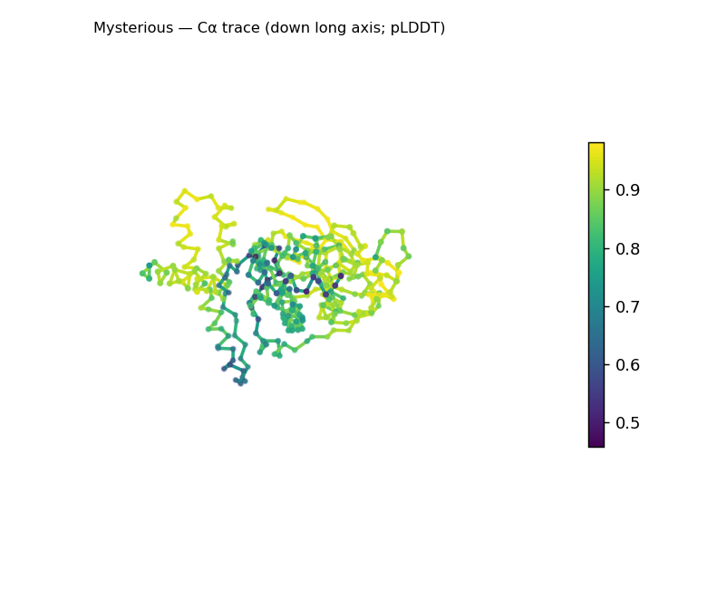
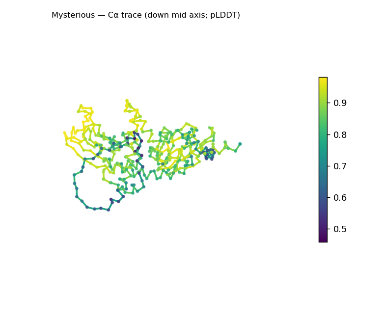
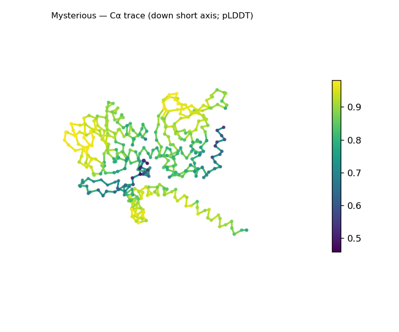
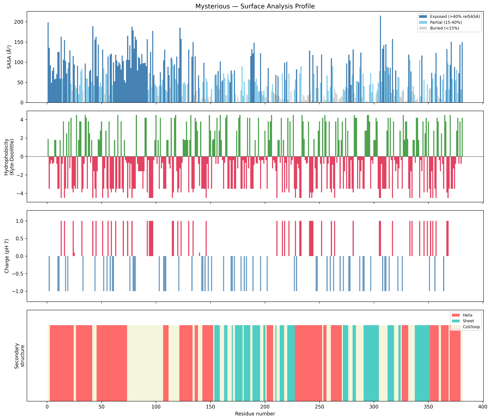
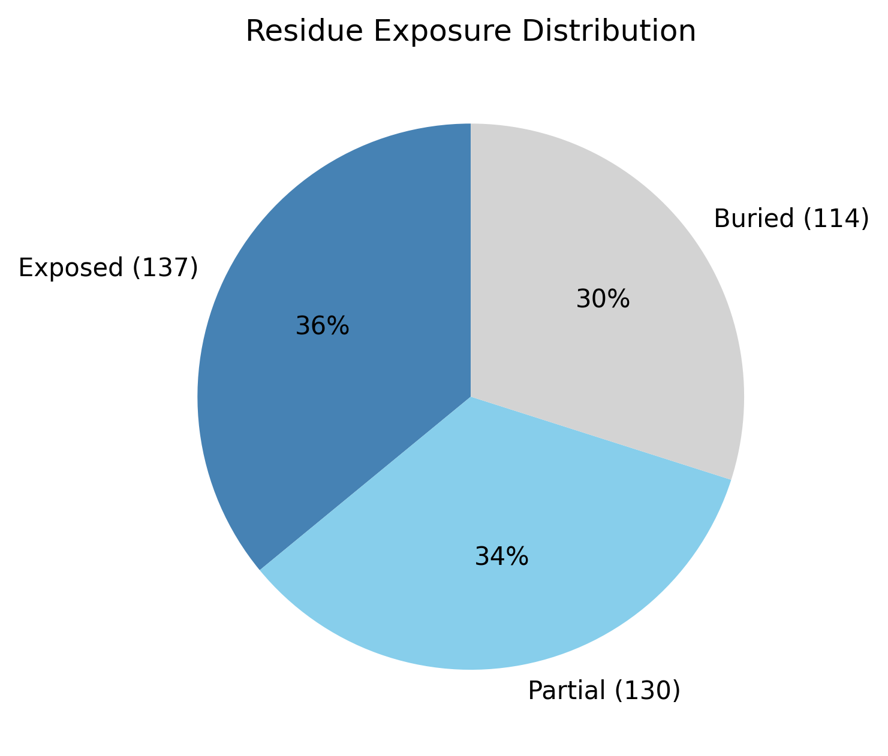

Structural analysis — Mysterious
Facts are emitted deterministically from the measurement scripts. Sections marked with a SYNTHESIS comment are authored by the Claude session (judgment, Zone 2), kept visibly separate from the measured facts.
Executive summary
A single-chain, 381-residue predicted model with a compact α/β architecture. Real DSSP secondary structure is 44.6% helix and 22.8% sheet (32.5% coil), and the domain is compact and folded — radius of gyration 24.2 Å sits just below the ~26.9 Å expected for 381 residues, asphericity 0.13 (roughly globular). The mixed α+β content yields an α/β SCOP-class call with a top candidate of α/β hydrolase (high confidence) — but that specific candidate rests on SS content alone and is not independently verified here. Confidence is solid (mean pLDDT 82.5, median 86.1) with a modest low-confidence minority (min 45.8). The solvent-exposed surface is near charge-balanced (net +3.1 e; 29 positive vs 25 negative surface residues), with three short hydrophobic patches.
User-provided context
None provided. All observations below are derived from the structure alone.
Structure overview
- Source: predicted model — pLDDT in the B-factor column
- Chains: 1 (single chain)
- Residues / atoms: 381 / 3023
- Missing residues: 0
- Non-solvent ligands: none
- chain A: 381 res
Structural views



Cα backbone trace (Agent 2.2 matplotlib placeholder), down the long / mid / short principal axes; coloured by pLDDT. A worm trace, not a Mol* cartoon — true cartoons pending Agent 2.1 (#18).
Fold & shape
- Shape: roughly globular (asphericity 0.13, Rg 24.23 Å)
- Approx. dimensions: 75.8 × 60.4 × 46.8 Å
- Secondary structure: helix 44.6%, sheet 22.8%, coil 32.5%
- Fold class: alpha/beta
- alpha/beta hydrolase (SCOP c.69, CATH 3.40.50; confidence high)
- TIM barrel (alpha/beta barrel) (SCOP c.1, CATH 3.20.20; confidence moderate)
- Rossmann fold (SCOP c.2, CATH 3.40.50; confidence low)
Surface properties
- Exposure: buried 29.9%, partial 34.1%, exposed 36.0%
- Total SASA: 23018.8 Ų
- Surface hydrophobicity (KD): mean -1.46 ± 2.87
- Surface charge (pH 7): net 3.1 e (29 +, 25 −)
- Hydrophobic patches: 3:
- residues 29–31 (len 3, mean KD 3.13)
- residues 47–50 (len 4, mean KD 2.58)
- residues 125–127 (len 3, mean KD 1.83)


Prediction quality / structural coherence
Confidence is reported, never gated — these signals are inputs for the synthesis below, not a pass/fail.
- pLDDT (chain A): mean 82.5, median 86.13, range 45.75–98.15, std 12.44
- Compactness: Rg 24.23 Å vs ~26.9 Å expected for 381 residues (2.5·N^0.4) — consistent
- Core present: buried fraction 29.9%
- Coil fraction: 32.5%
- Top fold-candidate confidence: high
Coherence assessment
The coherence signals agree with the confidence score and support a genuinely folded model. Compactness is in the folded range (Rg 24.2 Å vs ~26.9 expected) with a core present (29.9% buried) and 67% of residues in defined SS elements, so the model is neither extended nor molten. Mean pLDDT (82.5, median 86.1) is solidly medium-high; the spread (45.8–98.2, std 12.4) localizes some uncertainty without undermining the fold. Fold-level coherence holds at the class level — mixed α/β SS content is consistent with the compact globular shape — but the specific α/β-hydrolase candidate is a SS-ratio match with no topology or active-site corroboration here.
Expected-parameter comparison
No expected-parameter profile supplied — this is the default for novel / low-homology targets. See the independent observations below.
Independent observations
- Compact, well-structured α/β domain. 67% of residues sit in defined SS (44.6% helix, 22.8% sheet), and Rg 24.2 Å is below the ~26.9 Å globular expectation for 381 residues — a packed, folded single domain (29.9% buried).
- Near-neutral surface. Net charge +3.1 e from 29 positive vs 25 negative surface residues — a balanced profile rather than a polarized one; hydrophobic surface patches are short (longest 4 residues, 47–50).
- Fold candidate vs. evidence. The α/β SCOP class is well-supported by the SS content; the specific "α/β hydrolase" top candidate is a SS-ratio match not corroborated by any topology or catalytic-motif check in this pipeline. Treat the class as reliable and the named fold as a hypothesis.
- Confidence is non-uniform but high-centered (pLDDT median 86.1, min 45.8, std 12.4): a small minority of lower-confidence positions in an otherwise well-determined model.
What cannot be determined from structure alone
- Identity and function — not established; the analysis is identity-agnostic.
- Specific fold / topology — the α/β-hydrolase, TIM-barrel, and Rossmann candidates are SS-content matches; confirming the actual topology requires structural comparison (Foldseek) — Agent 3.
- Active site / mechanism — no ligands present, no catalytic machinery localized; the α/β-hydrolase fold name does not imply hydrolase activity or any reaction.
- Homology / relatives — Agent 3 (Foldseek + literature). Seeds: a compact ~381-residue single α/β domain (45% helix, 23% sheet), near-neutral surface (+3.1 e); verify topology against the α/β-hydrolase / TIM-barrel / Rossmann candidates.
Methods
- Measurements (deterministic):
parse_structure.py (metadata, confidence stats), surface_analysis.py (Shrake–Rupley SASA, Kyte–Doolittle hydrophobicity, charge at pH 7, DSSP secondary structure, shape metrics, SCOP/CATH fold class), render_views.py (Mol* cartoon renders).
- Report facts below the synthesis sections are emitted verbatim from the above scripts' JSON by
assemble_report.py — no transcription.
- Synthesis sections (executive summary, independent observations, coherence assessment, cannot-determine) are authored by Claude per
SKILL.md Step 9, each claim cited to a measurement.